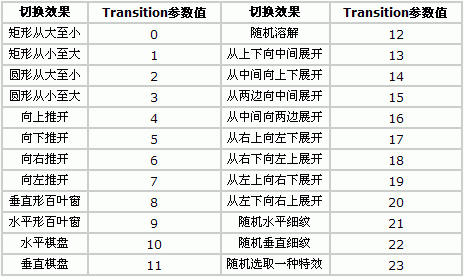
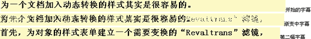

CSS的RevealTrans动态滤镜是一个神奇的滤镜，它能产生23种动态效果，更为奇妙的是它还能在23种动态效果中随机抽用其中的一种。用它来进行网页之间的动态切换，简直方便极了，你只要在网页源代码的< head >与< /head >之间插入这样一行代码：< Meta content=revealTrans(Transition=14,Duration=3.0) http-equiv=Page-enter >，当你进入这个页面时，网页将象拉幕一样从中间向两边拉开，是不是别具一格？！
RevealTrans滤镜只有两个参数，Duration：是切换时间，以秒为单位；Transition：是切换方式，它有24种方式，详见下表：

因此，你只要改变RevealTrans滤镜的“Transition"的值，就能获得不同的网页切换效果，是不是太方便了点？但很遗憾，要把RevealTrans滤镜用于网页中的某个对象就没有这么简单了，它必须借助于Javascript来调用其方法，才能实现，这就是说要动手编程序了。但也不是太难，下面我将通过一个制作动态字幕变换的例子来说明其使用方法。
渐淡字幕变换效果这个例子演示了利用Javascript程序控制Revealtrans滤镜来实现字幕逐渐淡出和渐进的效果，请看下面的效果图：

上面的效果看起来好象不好，是吗？实际效果看起来比这漂亮多了。由于是动态转换，上面只是我抓的三张图片，只能帮助你了解其转换过程，真正的效果只有待你按我下面讲的方法动手做出来才能看到。请看制作方法：
1、制作一个Revealtrans滤镜，取名为“mytrans"，其制作方法与前面介绍的静态滤镜相同，参数值为Transition=12,Duration=2。设置好后，在网页源代码的< head >与< /head >之间将有下面这样的代码：
< style type="text/css" >
< !--
.mytrans { filter:revealTrans(Transition=12,Duration=2)}
-- >
< /style >
2、插入一个层，我们把层的“Layer ID”改为“div1”（可直接在层的属性面板上加入即可），并设置好层的背景和调整好层的大小，并把Revealtrans滤镜加载到到层上，这时你看到的层的标记代码是这样的：< div id="div1" style="position:absolute; width:680px; height:30px; z-index:37; background: #FFFFCC; layer-background-color: #FFFFCC; border: 1px none #000000" class="mytrans" >< /div >
3、在网页源代码的< head >与< /head >之间插入下面这段Javascript程序：
< script language="JavaScript" >
< !--
function HelpArray(len)
{
this.length=len;
}
// 建立一个数组，存放转换的内容。
HelpText=new HelpArray(5);
HelpText[0]="在一个文档使用动态转换的滤镜（Revealtrans）其实是很容易的。";
HelpText[1]="首先，为对象的样式表单建立一个需要转换的“Revaltrans"滤镜，";
HelpText[2]="然后，使用“apply()"方法防止错误，";
HelpText[3]="现在，你可以改变任何你想改变的东西，";
HelpText[4]="最后，“play()"方法开始进行转换。";
ScriptText=new HelpArray(5);
var i= -1;
// 显示转换效果
function playHelp()
{
if (i==4)
{ i=0 ;}
else
{ i++; }
div1.filters[0].apply();
div1.innerText=HelpText[i];
div1.filters[0].play();
// 设置每段字幕演示的时间，以毫秒计。这里的时间要长于滤镜中的时间，以保证在转换结束后能停留一段时间。
// 以方便看清楚字幕内容。在本例中字幕演示的时间是6秒，滤镜中设置的转换时间是2秒。
mytimeout=setTimeout("playHelp()",6000);
}
-- >
< /script >
4、在网页的源代码的< body >中加入这样一句代码：onload="playHelp()"。
到此，可以按F12看效果了，好象也不是太难。你若是想看看其它的转换效果，只要改变一下Revealtrans滤镜中的Transition参数值就行了，其它什么也不用改动，你瞧多方便！用它来作广告条我想效果不会差。比起动画来可瘦小多了。
当然Revealtrans滤镜同样也可以用于图片，效果也不错，但要改动一下Javascript程序。由于CSS还有一个动态滤镜是BlendTrans滤镜，用它做图片的淡入淡出效果相当不错，且这两个滤镜的使用方法有许多类似的地方，所以关于怎样在图片上用Revealtrans滤镜来产生变换效果，我就一并放到下篇一起讲了。